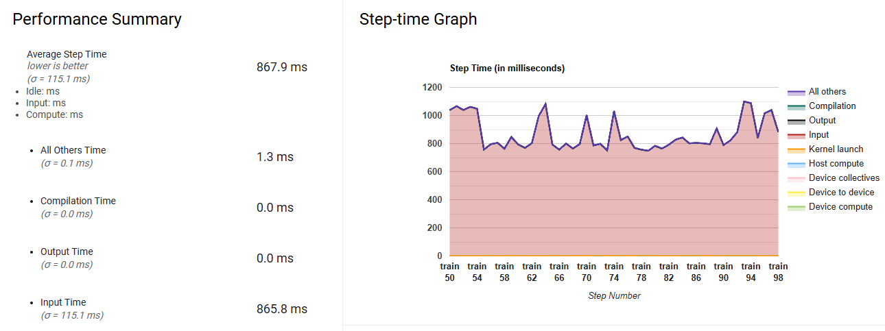
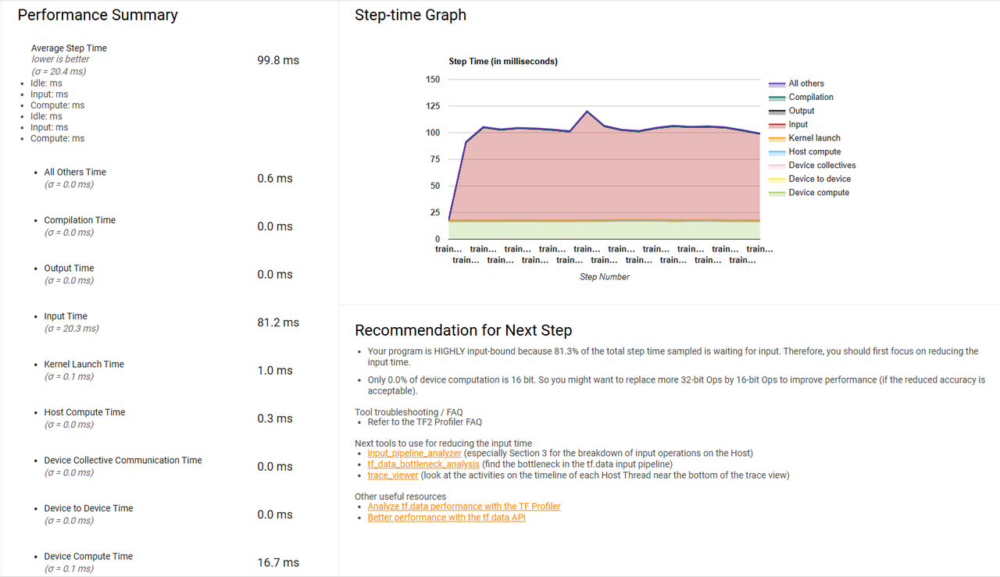
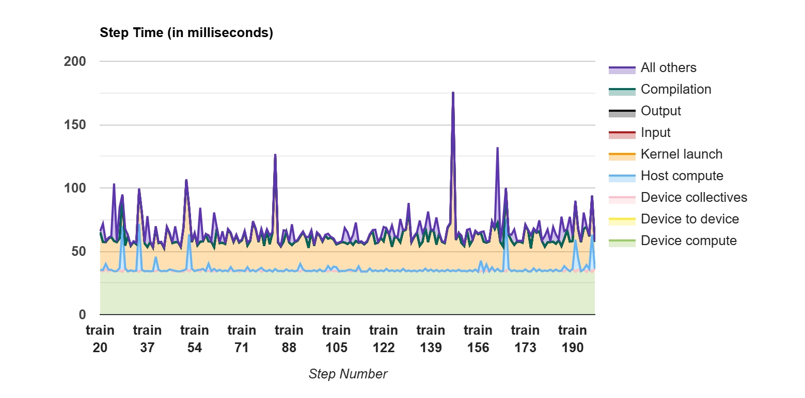
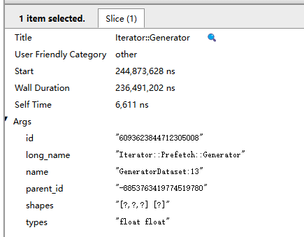
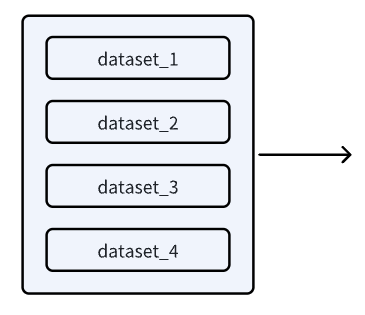
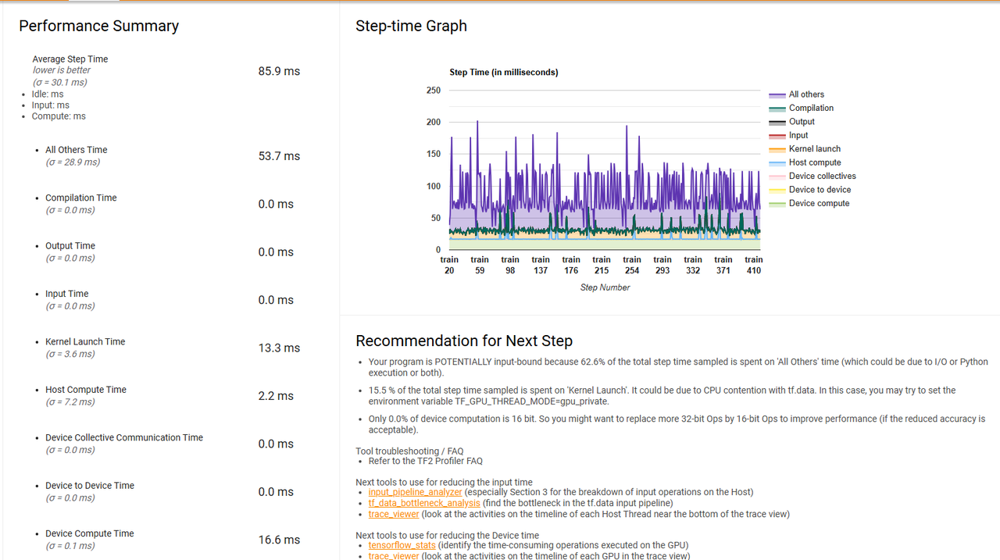
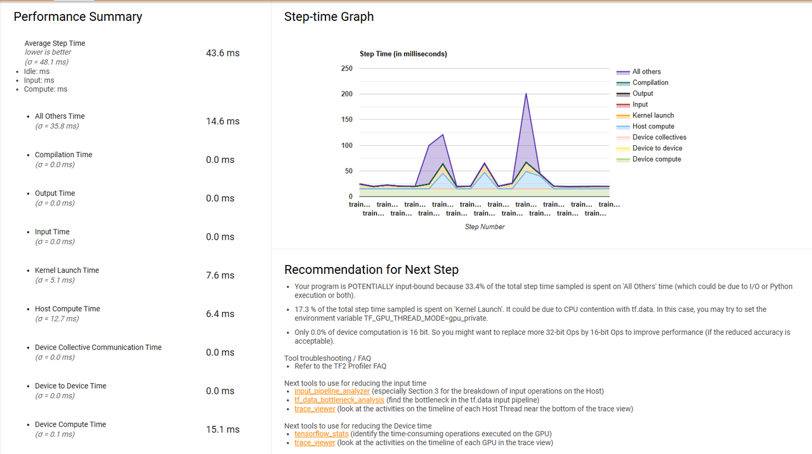
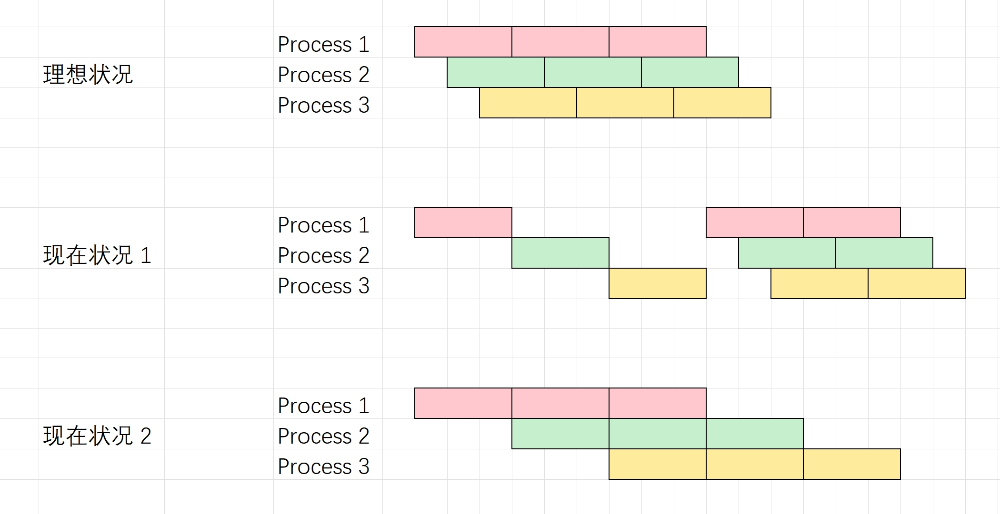
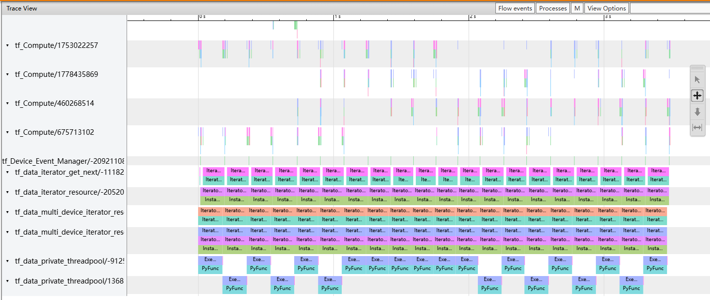

众所周知，keras 数据集的实现主要依赖于两派：
一派为 keras 提供的数据集相关接口，其中包括已经封装好的几个 toy dataset ，还有一些 预处理函数
虽然预处理函数被标成 deprecated，但是貌似函数功能没变，只是被挪了个地方，应该都是进到 keras.utils 里面了
另一派为显式实现 tf.data pipeline
官方推荐用 tf.data 去构建 TensorFlow 输入流水线，更多参考 官方教程
先给一个太长不看的结论：
如果图省事+不需要定制需求的话就用 keras 自带的接口就好
实在想折腾的话建议优先关注 mini-batch 的 batch_size 设置
然后注意向量化运算的利用
问题描述 工地上涉及到的数据集是比较客制化的时序数据集，可以描述为下面的场景
输入 X 和 y，以及下标序列 index
X 的 shape 为 (num_samples, num_features), y 的 shape 为 num_samples设置时间序列长度为 sequence_length
对于每个 index 中的元素 i，抽出 (X[i-sequence_length+1:i+1], y[i]) 作为一笔数据
收集 batch_size 笔这样的数据作为一个 batch 的数据，送到模型里面进行训练和推理
特别地，当 index 取为全集的时候（每个能抽的数据都利用去训练，也即 index=[sequence_length-1, l, ..., num_samples]），该功能可以用 keras.utils.timeseries_dataset_from_array 来实现，参考：
1 2 3 4 5 6 7 8 9 10 11 12 13 14 15 16 17 18 19 20 21 22 23 24 import osos.environ['VISIBLE_CUDA_DEVICES' ] = '-1' import numpy as npfrom keras.utils import timeseries_dataset_from_array num_samples = 10000 num_features = 10 sequence_length = 20 batch_size = 3 X = np.arange(num_samples * num_features).reshape(num_samples, num_features) y = np.arange(num_samples) dataset = timeseries_dataset_from_array(X, y, sequence_length, batch_size=batch_size) Xi, yi = dataset.take(1 ).as_numpy_iterator().next () print (f'{Xi = } ' )print ()print (f'{yi = } ' )
观察上述输出，发现要使用该 API，还需在 y 的前面加上 l-1 个 padding 才能匹配上我们上面描述的那个需求
但是由于我们加了对数据集上的采样，不能直接调用这玩意儿
一开始的做法 简易实现 首先想到的（能被搜出来的）就是先实现一个吐出单笔数据的数据集，然后利用 tf.data.Dataset.from_generator 将一个 generator 封装为 tf.data.Dataset，然后在这基础上再去加 batch，prefetch，cache 等操作构造 mini-batch
1 2 3 4 5 6 7 8 9 10 11 12 13 14 15 16 17 18 19 20 21 22 23 24 25 26 27 28 29 30 31 32 33 import osos.environ['VISIBLE_CUDA_DEVICES' ] = '-1' import numpy as npimport tensorflow as tfnum_samples = 10000 num_features = 10 sequence_length = 20 batch_size = 3 X = np.arange(num_samples * num_features).reshape(num_samples, num_features) y = np.arange(num_samples) def get_sample_generator (X: np.ndarray, y: np.ndarray, index: np.ndarray ): def sample_generator (): for i in index: yield X[i-sequence_length+1 :i+1 ], y[i] return sample_generator output_signature = ( tf.TensorSpec(shape=(sequence_length, num_features), dtype=tf.float32), tf.TensorSpec(shape=(), dtype=tf.float32) ) g = get_sample_generator(X, y, np.arange(sequence_length-1 , len (X))) dataset = tf.data.Dataset.from_generator(g, output_signature=output_signature) dataset = dataset.batch(batch_size).prefetch(tf.data.AUTOTUNE) Xi, yi = dataset.take(1 ).as_numpy_iterator().next () print (f'{Xi = } ' )print ()print (f'{yi = } ' )
一开始就是走这个简易实现，不过马上发现问题：训练第 1 个 epoch 用时过久，似乎能通过加 cache 来“绕过”后续 epoch 训练的问题。猜测瓶颈出在数据集吐数据上。
性能分析方法 一个手段是弄一个简单的模型去跑模型训练，利用 tensorflow profiler 查看前面 step 的 profile 结果，可以清晰地看到看到当 batch_size=10000 时，绝大多数时间都耗在了输入生成的阶段
还有一个手段是利用 line_profiler 分析，去尝试单步迭代数据集，看看主要耗时都在哪一行，绝对时长多少，并且针对热点去调整实现
譬如上面简易实现的 profiler 结果，如下：

暴力实现 简易实现取数据慢的核心原因是因为抽样和窗口化操作需要每次都老老实实去取才行。为了绕过这个在线生成的过程，一个很自然的方法就是先预先（离线）生成形状为 （num_index, sequence_length, num_features) 的全量数据，然后利用 tf.data.Dataset.from_tensor_slices 来生成迭代数据集。这样做的好处就是 __getitem__ 或者 __iter__ 的时候（理论上）不存在在线计算的瓶颈；而且离线生成的时候也可以用到一些向量化操作的 trick 来批量化取下标
1 2 3 4 5 6 7 8 9 10 11 12 13 14 15 16 17 18 19 20 21 22 23 24 25 26 27 28 29 30 31 32 33 import osos.environ['VISIBLE_CUDA_DEVICES' ] = '-1' import numpy as npimport tensorflow as tfnum_samples = 10000 num_features = 10 sequence_length = 20 batch_size = 3 X = np.arange(num_samples * num_features).reshape(num_samples, num_features) y = np.arange(num_samples) def get_full_dataset (X: np.ndarray, y: np.ndarray, index: np.ndarray ): num_index = len (index) X_full = np.zeros((num_index, sequence_length, num_features), dtype=np.float32) for i in range (sequence_length): current_index = index + i - sequence_length + 1 X_full[:, i, :] = X[current_index, :] y_full = y[index] return X_full, y_full index = np.arange(sequence_length-1 , len (X)) X_full, y_full = get_full_dataset(X, y, index) dataset = tf.data.Dataset.from_tensor_slices((X_full, y_full)) dataset = dataset.batch(batch_size).prefetch(tf.data.AUTOTUNE) Xi, yi = dataset.take(1 ).as_numpy_iterator().next () print (f'{Xi = } ' )print ()print (f'{yi = } ' )
但是这有一个问题：工地上的 dataframe 往往会比较大，一个 dataframe 勉强能被内存装下，但是 sequence_length 个 dataframe 是装不下的。如果用到虚拟内存的话，那么整个过程又会变得奇慢无比。所以这个实现对于大数据集来说是不现实的。
改进 魔改 keras.utils.timeseries_dataset_from_array 首先我们假设 keras.utils.timeseries_dataset_from_array 的实现是要更加好的，然后进到 具体实现 里面，把
1 start_positions = np.arange(0 , num_seqs, sequence_stride, dtype=index_dtype)
替换成我们定制的下标就好了
1 2 3 4 5 6 7 8 9 10 11 12 13 14 15 16 17 18 19 20 21 22 23 24 25 26 27 28 29 30 31 32 33 34 35 36 37 38 39 40 41 42 43 44 45 46 47 48 49 50 51 52 53 54 55 56 57 58 59 60 61 62 63 64 65 66 67 68 69 70 71 72 73 74 75 76 77 78 79 80 81 82 import osos.environ['VISIBLE_CUDA_DEVICES' ] = '-1' import numpy as npimport tensorflow as tfdef sequences_from_indices (array, indices_ds: tf.data.Dataset ): dataset = tf.data.Dataset.from_tensors(array).repeat() dataset = tf.data.Dataset.zip ((dataset, indices_ds)).map ( lambda steps, inds: tf.gather(steps, inds), num_parallel_calls=tf.data.AUTOTUNE, ) return dataset def get_sequence_dataset (X: np.ndarray, Y: np.ndarray, index: np.ndarray, sequence_length: int , batch_size: int , shuffle: bool = False ): if len (index) == 0 : return tf.data.Dataset.range (0 ) positions_ds = tf.data.Dataset.from_tensors(index).repeat() indices = tf.data.Dataset.zip ( (tf.data.Dataset.range (len (index)), positions_ds) ) indices_X = indices.map ( lambda i, positions: tf.range ( positions[i] - sequence_length + 1 , positions[i] + 1 , ), num_parallel_calls=tf.data.AUTOTUNE, ) indices_Y = indices.map ( lambda i, positions: positions[i], num_parallel_calls=tf.data.AUTOTUNE, ) dataset_X = sequences_from_indices(X, indices_X) dataset_Y = sequences_from_indices(Y, indices_Y) dataset = tf.data.Dataset.zip ((dataset_X, dataset_Y)) dataset = dataset.prefetch(tf.data.AUTOTUNE) if batch_size is not None : if shuffle: dataset = dataset.shuffle(buffer_size=batch_size * 8 ) dataset = dataset.batch( batch_size ) else : if shuffle: dataset = dataset.shuffle(buffer_size=1024 ) return dataset num_samples = 10000 num_features = 10 sequence_length = 20 batch_size = 3 X = np.arange(num_samples * num_features).reshape(num_samples, num_features) y = np.arange(num_samples) index = np.arange(sequence_length-1 , len (X)) dataset = get_sequence_dataset(X, y, index, sequence_length, batch_size=batch_size) Xi, yi = dataset.take(1 ).as_numpy_iterator().next () print (f'{Xi = } ' )print ()print (f'{yi = } ' )
这个实现的思路是先在 index 的时候转换成 tf.data 对应的下标迭代 pipeline，然后再根据下标去取数据。
比起一开始的简易实现，这个实现迭代的时候会更快一些（可能是更早被 tf.data 接管了）；但是这个实现还是有一个问题：没有利用到 可以并行取数据 的特性。也就是说，取 index[2] 可以跟 index[1] index[0] 的时候同时取的，甚至可以先于 index[1] index[0] 取的，因为这些取数据的过程 互不干扰 。但是，目前使用的 tf.data 取数据的过程似乎都是串行的，譬如 tf.data.Dataset.from_generator 这个从 generator 来生成数据的，就是假设只能通过一个 next 方法来获取下一批数据。之后的优化应该重点考虑接触这个限制，能够让取数据的过程并行化。
keras.utils.Sequence 实现之后的实现是继承 keras.util.Sequence 这个类。注意这个类的数据迭代是以 batch 为计量单位的，也就是每次取一个 batch 的数据。需要重写以下方法：
__len__ 这个数据集一共有多少个 batch__getitem__ 根据 batch_id，获取对应的批量数据on_epoch_end 在每个 epoch 执行完之后调用，一般是用于负责数据的 shuffle
在实现的过程中，注意几点：
还是尽可能把 __getitem__ 中取数据的逻辑变得简单，越简单越好
预处理的操作可以提前做，譬如放在构造函数里面完成
尽可能利用 numpy 中的向量化运算，譬如根据下标取元素的时候，可以直接根据下标取出所有元素；还有如下特性：
1 2 3 4 5 6 7 8 9 A = np.arange(6 ).reshape(2 , 3 ) B = A[:, [[0 , 1 ], [1 , 2 ]]]
也就是说，我们可以预先生成一个二维的 index（下面的 self.index_sequence），然后利用这个特性去进行索引取出所需要的元素。之所以这样预取，是因为 self.index_sequence 的形状是 (num_index, sequence_length)，跟 X 的量级差不多，所以内存还能装得下（如果装不下的话恐怕又只能在线生成了）
1 2 3 4 5 6 7 8 9 10 11 12 13 14 15 16 17 18 19 20 21 22 23 24 25 26 27 28 29 30 31 32 33 34 35 36 37 38 39 40 41 42 43 44 45 46 47 48 49 50 51 52 53 54 55 56 57 58 59 60 61 62 63 64 65 66 67 68 69 70 71 72 73 74 75 76 77 78 79 80 81 82 83 84 85 86 87 88 89 90 91 92 93 94 import osos.environ['VISIBLE_CUDA_DEVICES' ] = '-1' import numpy as npfrom tensorflow import kerasclass TSDataset (keras.utils.Sequence ): def __init__ ( self, X: np.ndarray, y: np.ndarray, index: np.ndarray, sequence_length: int , batch_size: int , shuffle: bool = False , drop_last: bool = True , ) -> None : super ().__init__() self.X = X.astype(np.float32) self.y = y.astype(np.float64) self.index = index self.sequence_length = sequence_length self.batch_size = batch_size self.shuffle = shuffle self.num_index = len (self.index) self.steps_per_epoch = self.num_index // batch_size if drop_last or self.num_index % batch_size == 0 : self.num_index_in_last_step = 0 else : self.steps_per_epoch += 1 self.index += self.index[ : batch_size - self.num_index % batch_size ] self.num_index_in_last_step = self.num_index % batch_size self.index = np.array(self.index) self._get_index_sequence() def _get_index_sequence (self ): num_maintaining_index = len (self.index) self.index_sequence = np.zeros( (num_maintaining_index, self.sequence_length), dtype=np.int32 ) for i in range (self.sequence_length): self.index_sequence[:, i] = self.index + i + 1 - self.sequence_length def __len__ (self ): return self.steps_per_epoch def __getitem__ (self, index ): current_batch_id = self.index[ self.batch_size * index : self.batch_size * (index + 1 ) ] all_indices = self.index_sequence[ self.batch_size * index : self.batch_size * (index + 1 ), : ] X_batch = self.X[all_indices, ...] y_batch = self.y[current_batch_id] return X_batch, y_batch def on_epoch_end (self ): if self.shuffle: num_maintaining_index = len (self.index) shuffle_mapping = list (range (num_maintaining_index)) np.random.shuffle(shuffle_mapping) self.index = self.index[shuffle_mapping] self.index_sequence = self.index_sequence[shuffle_mapping, :] num_indexs = 10000 num_features = 10 sequence_length = 20 batch_size = 3 X = np.arange(num_indexs * num_features).reshape(num_indexs, num_features) y = np.arange(num_indexs) index = np.arange(sequence_length-1 , len (X)) dataset = TSDataset(X, y, index, sequence_length, batch_size=batch_size) Xi, yi = dataset[0 ] print (f'{Xi = } ' )print ()print (f'{yi = } ' )
然后在 model.fit 和 model.evaluate 的时候，需要加上 workers=6 以及 max_queue_size=20 参数来并行取数据（这两个数实测下来往更高了调好像就占不到便宜了）
当然具体改进有没有用，以及模型跟占比如何的话，还得结合 tensorflow profiler 来分析：

对比简易实现，改进已经很 OK 了，但是还有进一步改进的余地
进阶改进 下面介绍我试了下来，比较有用的改进。
改进 1：调小 batch_size 做到这里之后，工友的一次不经意的尝试揭开了最关键的谜底：之前的配置文件中 batch_size 被设置成了 10000，实际上设置成 2000 之后马上输入的生成时间就会减少很多，WTF……
所以最关键的实际上就是把 batch_size 调小就行了。我们在做 CV 的时候往往会被灌输一个理念，就是 batch_size 尽可能调大到显存炸了为止。这是针对 batch_size <= 128 的情形（一般 CV 最多就这样设 batch_size 顶天了）；但是，当 batch_size 大到一定程度的时候，处理 batch 数据这个环节就会成为拖油瓶。所以最简单的解决策略就是调小 batch_size。batch_size 调小之后的 profiler 长这样，生成数据的时长占比一下子就不见了：

改进 2：利用 tf.data.Dataset.interleave 用法详见 文档
因为上面的基于 generator 的所有实现，无论何种，tensorflow 底层仅会调用 tf_data_iterator_get_next 来获取数据

而且 profiler 的性能提示中说到可以考虑利用 tf.data.Dataset.interleave 这个 API。原理猜想大概就是把以前的单个 generator 变成若干并行的 generator，然后取数据的时候就轮流用子 generator 来取数据，如下图：

所以，如果我们不变 tensorflow 的这个 tf_data_iterator_get_next 底层调用，只是将若干个 dataset 以如下的方式“组装”成某个大 dataset，对外（箭头的右边）还是通过 tf_data_iterator_get_next 这个函数来获取下一个 batch 的数据，但是对内可以将这个获取下一个 batch 的操作 “指派” 到具体的子数据集上，结合子数据集又可以通过 prefetch 来提前获取后 N 个迭代的内容，那么就相当于将取数据这个操作“平摊”到子数据集上，也就实现了数据集并行。
举个例子：假设单个数据集获取下一个 batch 需要耗时 400ms，如果 “组装” 的并行度为 10 的话，那么理想状态下，“组装” 后的数据集获取下一个 batch 仅需要耗时 40ms
代码实现如下：
1 2 3 4 5 6 7 8 9 10 11 12 13 14 15 16 17 18 19 20 21 22 23 24 25 26 27 28 29 30 31 32 33 34 35 36 37 38 39 40 41 42 43 44 45 46 47 48 49 50 51 52 53 54 55 56 57 58 59 60 61 62 63 64 65 66 67 68 69 70 71 72 73 74 75 76 77 78 79 80 81 82 83 84 85 86 87 88 89 90 91 92 93 94 95 96 97 98 99 100 101 102 103 104 105 106 107 108 109 110 111 112 113 114 115 116 117 118 119 120 121 122 123 124 125 126 127 128 129 130 131 import osos.environ['VISIBLE_CUDA_DEVICES' ] = '-1' import numpy as npimport tensorflow as tffrom tensorflow import kerasclass TSDataset (keras.utils.Sequence ): def __init__ ( self, X: np.ndarray, y: np.ndarray, index: np.ndarray, sequence_length: int , batch_size: int , shuffle: bool = False , drop_last: bool = True , ) -> None : super ().__init__() self.X = X.astype(np.float32) self.y = y.astype(np.float64) self.index = index self.sequence_length = sequence_length self.batch_size = batch_size self.shuffle = shuffle self.num_index = len (self.index) self.steps_per_epoch = self.num_index // batch_size if drop_last or self.num_index % batch_size == 0 : self.num_index_in_last_step = 0 else : self.steps_per_epoch += 1 self.index += self.index[ : batch_size - self.num_index % batch_size ] self.num_index_in_last_step = self.num_index % batch_size self.index = np.array(self.index) self._get_index_sequence() def _get_index_sequence (self ): num_maintaining_index = len (self.index) self.index_sequence = np.zeros( (num_maintaining_index, self.sequence_length), dtype=np.int32 ) for i in range (self.sequence_length): self.index_sequence[:, i] = self.index + i + 1 - self.sequence_length def __len__ (self ): return self.steps_per_epoch def __getitem__ (self, index ): current_batch_id = self.index[ self.batch_size * index : self.batch_size * (index + 1 ) ] all_indices = self.index_sequence[ self.batch_size * index : self.batch_size * (index + 1 ), : ] X_batch = self.X[all_indices, ...] y_batch = self.y[current_batch_id] return X_batch, y_batch def on_epoch_end (self ): if self.shuffle: num_maintaining_index = len (self.index) shuffle_mapping = list (range (num_maintaining_index)) np.random.shuffle(shuffle_mapping) self.index = self.index[shuffle_mapping] self.index_sequence = self.index_sequence[shuffle_mapping, :] num_indexs = 10000 num_features = 10 sequence_length = 20 batch_size = 3 X = np.arange(num_indexs * num_features).reshape(num_indexs, num_features) y = np.arange(num_indexs) index = np.arange(sequence_length-1 , len (X)) seq = TSDataset(X, y, index, sequence_length, batch_size=batch_size) output_signature = ( tf.TensorSpec( shape=(batch_size, sequence_length, num_features), dtype=tf.float32, ), tf.TensorSpec(shape=(batch_size,), dtype=tf.float32), ) NUM_PARALLELS = 16 def to_generator (seq: tf.keras.utils.Sequence , generator_id: int ): def wrapped_callable (): for i in range (generator_id, len (seq), NUM_PARALLELS): yield seq[i] return wrapped_callable dataset = ( tf.data.Dataset.from_tensor_slices( [ tf.data.Dataset.from_generator( to_generator(seq, i), output_signature=output_signature ).prefetch(4 ) for i in range (NUM_PARALLELS) ] ) .interleave( lambda x: x, cycle_length=NUM_PARALLELS, block_length=1 , num_parallel_calls=NUM_PARALLELS, ) .prefetch(NUM_PARALLELS) ) dataset = dataset.apply(tf.data.experimental.assert_cardinality(len (seq))) Xi, yi = dataset.take(1 ).as_numpy_iterator().next () print (f'{Xi = } ' )print ()print (f'{yi = } ' )
batch_size=10000 的 profiler 如下所示：


可以看到输入耗时有所缓解，但还是有点长（感觉不如调小 batch_size 改进来得更直接）而且有几个坑：
有如上图所示的尖刺：如果并行度 * 模型计算一个 batch 的时间 < 吐出一个 batch 数据的时间，那么还是会造成周期性的阻塞；
针对上面一点，一个很自然的想法是增大 tf.data.Dataset.interleave 的并行度；但是实验发现并行度并不能无脑增大，一个原因是下面会说到的 tensorflow 底层的 tf_data_private_threadpool 限制；另一方面是还会带来下面的坑
在理想的情况下，每个子数据集都像“流水线”般地生成数据；但是实际情况会有一些特殊：在取前 NUM_PARALLELS 个数据的时候，会发生阻塞，因为一开始没启动子数据集的 prefetch。感觉这个设定还是跟 tensorflow 的 API 假设有关，而且更杯具的是在每个 epoch 的开头，这个耗时的启动过程总是会重新来过。如下图所示：

改进 3：手动维护多进程队列 在测试 keras.utils.Sequence 的时候我关注到了一点：在 trace viewer 中，下面有一个 tf_data_private_threadpool，猜想应该是 tensorflow 底层维护的、实际负责干活的线程池：

按理来说，使用 keras.utils.Sequence 之后，将 workers 往大了调之后，应该 tf_data_private_threadpool 的并行数也该是多多益善的，但是在明显可以往大了再调调效率还有得提高（生成输入的时长占比较高）的背景下，这个并行数就没！动！了！（workers=20 之后这个条目数量还是 2 个的样子）；类似地，在使用 tf.data.Dataset.interleave 之后，并不是一味调高 NUM_PARALLELS 就能增大实际 tf_data_private_threadpool 的并行数。而且，这种并行数的限制肯定不是因为设备的计算资源不够用才导致的。
这里提出一个猜想就是 可能 tensorflow 内部对于并行度有约束 。虽然搜索了若干对并行度的设置：
但是尝试过后发现没什么改变。然后又去翻源码，翻到了个 这 ，难道说 inter_op_parallelism_threads 已经被钦定了？我不理解
所以最后就冒出一个想法：既然你 tensorflow 对于数据获取这一方面做得这么烂，那我就自己维护多进程取数据的过程。
把 prefetch 分成 NUM_PARALLELS 个槽，每个槽装 1 个 batch 的数据；
有多个写者（生成数据），具体来说每个写者对一个槽里面写 batch 数据；
有一个读者（读数据），循环读处理好的 batch 数据；
对于每个槽，维护状态，NEW 表示当前槽的数据是最新的，USED 表示当前槽的数据是还没准备好的
对每个槽配置一个锁：无论是读数据还是写数据，都需要先上锁，对数据操作，操作完才能更新对应槽的状态
对象一创建就拉起 NUM_PARALLELS 个写者写数据
因为 python GIL 的限制，所以应该被做成多进程的模式；因为数据比较大，所以数据共享采用共享内存。
让 deepseek 糊了一个实现：
1 2 3 4 5 6 7 8 9 10 11 12 13 14 15 16 17 18 19 20 21 22 23 24 25 26 27 28 29 30 31 32 33 34 35 36 37 38 39 40 41 42 43 44 45 46 47 48 49 50 51 52 53 54 55 56 57 58 59 60 61 62 63 64 65 66 67 68 69 70 71 72 73 74 75 76 77 78 79 80 81 82 83 84 85 86 87 88 89 90 91 92 93 94 95 96 97 98 99 100 101 102 103 104 105 106 107 108 109 110 111 112 113 114 115 116 117 118 119 120 121 122 123 124 125 126 127 128 129 130 131 132 133 134 135 136 137 138 139 140 141 142 143 144 145 146 147 148 149 150 151 152 153 154 155 156 157 158 159 160 161 162 163 164 165 166 167 168 169 170 171 172 173 174 175 176 177 178 179 180 181 182 183 184 185 186 187 188 189 190 191 192 193 194 195 196 197 198 199 200 201 202 203 204 205 206 import multiprocessing as mpfrom multiprocessing.shared_memory import SharedMemoryimport numpy as npimport timeUSED = 0 NEW = 1 class ParallelTSDataset : def __init__ ( self, X: np.ndarray, y: np.ndarray, index: np.ndarray, sequence_length: int , batch_size: int , shuffle: bool = False , drop_last: bool = True , num_parallels: int = 4 ): self.X = X.astype(np.float32) self.y = y.astype(np.float32) self.original_index = index.copy() self.sequence_length = sequence_length self.batch_size = batch_size self.shuffle = shuffle self.drop_last = drop_last self.num_parallels = num_parallels self.manager = mp.Manager() self.slots = self.manager.list () self.x_shape = (batch_size, sequence_length, X.shape[1 ]) self.y_shape = (batch_size,) self.x_dtype = np.dtype(np.float32) self.y_dtype = np.dtype(np.float32) for _ in range (num_parallels): x_shm = SharedMemory(create=True , size=np.prod(self.x_shape)*self.x_dtype.itemsize) y_shm = SharedMemory(create=True , size=np.prod(self.y_shape)*self.y_dtype.itemsize) self.slots.append({ 'x_shm' : x_shm.name, 'y_shm' : y_shm.name, 'state' : self.manager.Value('i' , USED), 'lock' : self.manager.Lock(), 'ready' : self.manager.Event() }) x_shm.close() y_shm.close() self._reset_indexes() self.writers = [] for slot_idx in range (num_parallels): p = mp.Process(target=self._writer_worker, args=(slot_idx,), daemon=True ) p.start() self.writers.append(p) self.reader_idx = 0 def _reset_indexes (self ): """初始化/重置索引系统""" self.index = self.original_index.copy() self.num_index = len (self.index) self.steps_per_epoch = self.num_index // self.batch_size if not (self.num_index % self.batch_size == 0 or self.drop_last): self.steps_per_epoch += 1 self.index_sequence = np.zeros( (self.num_index, self.sequence_length), dtype=np.int32 ) for i in range (self.sequence_length): self.index_sequence[:, i] = self.index + i + 1 - self.sequence_length def _writer_worker (self, slot_idx ): """写进程工作函数""" slot = self.slots[slot_idx] x_shm = SharedMemory(name=slot['x_shm' ]) y_shm = SharedMemory(name=slot['y_shm' ]) x_arr = np.ndarray(self.x_shape, self.x_dtype, x_shm.buf) y_arr = np.ndarray(self.y_shape, self.y_dtype, y_shm.buf) batch_offset = slot_idx * self.batch_size try : while True : with slot['lock' ]: if slot['state' ].value == USED: x_data = self.X[self.index_sequence[batch_offset:batch_offset+self.batch_size]] x_arr[:] = x_data y_data = self.y[self.index[batch_offset:batch_offset+self.batch_size]] y_arr[:] = y_data slot['state' ].value = NEW slot['ready' ].set () batch_offset += self.num_parallels * self.batch_size time.sleep(0.01 ) finally : x_shm.close() y_shm.close() def __len__ (self ): return self.steps_per_epoch def __getitem__ (self, index ): """实现预取逻辑""" while True : slot = self.slots[self.reader_idx] self.reader_idx = (self.reader_idx + 1 ) % self.num_parallels if slot['ready' ].is_set(): with slot['lock' ]: if slot['state' ].value == NEW: x_shm = SharedMemory(name=slot['x_shm' ]) y_shm = SharedMemory(name=slot['y_shm' ]) try : X_batch = np.copy(np.ndarray( self.x_shape, self.x_dtype, x_shm.buf )) y_batch = np.copy(np.ndarray( self.y_shape, self.y_dtype, y_shm.buf )) finally : x_shm.close() y_shm.close() slot['state' ].value = USED slot['ready' ].clear() return X_batch, y_batch else : time.sleep(0.01 ) def on_epoch_end (self ): """epoch结束时打乱数据""" if self.shuffle: shuffle_indices = np.random.permutation(len (self.index)) self.index = self.index[shuffle_indices] self.index_sequence = self.index_sequence[shuffle_indices] def cleanup (self ): """清理资源""" for p in self.writers: p.terminate() for slot in self.slots: try : x_shm = SharedMemory(name=slot['x_shm' ]) x_shm.close() x_shm.unlink() except : pass try : y_shm = SharedMemory(name=slot['y_shm' ]) y_shm.close() y_shm.unlink() except : pass num_indexs = 20 num_features = 10 sequence_length = 5 batch_size = 3 NUM_PARALLELS = 4 X = np.arange(num_indexs * num_features).reshape(num_indexs, num_features) y = np.arange(num_indexs) index = np.arange(sequence_length-1 , len (X)) dataset = ParallelTSDataset( X, y, index, sequence_length, batch_size=batch_size, num_parallels=NUM_PARALLELS ) try : Xi, yi = dataset[0 ] print (f'{Xi = } ' ) print () print (f'{yi = } ' ) finally : dataset.cleanup()
注意：在 linux 系统中可以使用多个子进程加载数据，而在 windows 系统中不能这样做。如果要在 windows 系统中使用的话，创建子进程的代码必须要在 if __name__ == '__main__': 下面才行
此时注意：因为已经使用了一个循环队列来控制数据的读写，所以数据集的生成相当于是一个 iterator，只关注 next 了，__getitem__ 方法的 index 参数没有真正被使用，而是根据调用次数来绝对的 __getitem__ 的返回值，所以理论上也可以向上暴露 generator。
但是有一个问题始终是存在的，就是调用 model.fit 的时候，每个 epoch 都会重新创建一个数据集对象，prefetch 之类的占便宜手法不能跨 epoch 应用（这点很烦，这样就解释了为什么 from_generator 是传入一个 callable，它内部每个 epoch 会调用 __call__ 方法）。这点目前没找到解决方法，不过似乎再往下钻研性价比过低了，就此打住，告一段落。